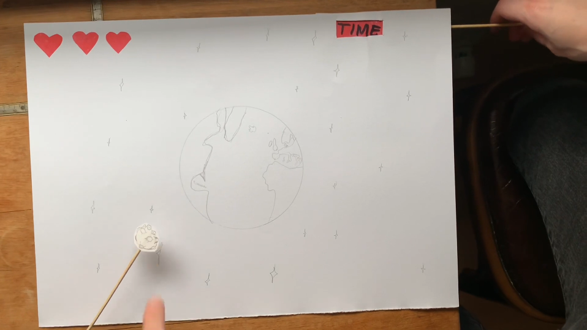

Basic Animation
This 4 week long theme was about learning the basics of the programming language Javascript. With the addition of HTML and CSS, is it the third language that makes up most websites.
The goal was to make a functioning point-and-click game with our own assets on a website. It required a background, score, health, a timer and a “good thing” and a “bad thing” to click on. The click-able things had to have an animation and a consequence; a point for clicking the good and losing health by clicking the bad.
Since the game was supposed to be displayed on a website did we have to use all our prior knowledge to make it happen. The website’s structure with HTML, styling and animating with CSS, functions with Javascript, assets made in Adobe Illustrator and even a paper-prototype of the game like in basic UX.
Link to gamePaper Prototype
Before any code was written, we brainstormed on an idea. When we had an idea for a game that met the requirements, we tested the idea on paper. Before writing any code, I made a paper-prototype to visualise the game.
Activity Diagram
Before we could begin to understand the Javascript code necessary for the game to function, we made an activity diagram. It would serve as a blueprint for us to follow since programming in javascript can turn complicated very fast.
It has a start point which is the moment we hit “PLAY” and an end point which is either a screen saying “You Lost” or “You Win”. In between are all the user’s inputs and what happens. Clicking a good thing results in a point given to the player, and you win if the score has reached 10 points, if you’re still not there, then keep going.
Asset List & Design Documentation
I decided to make a game about Earth being hit by a series of meteoroids while getting aid from aliens. The player needs to click in meteoroids in time before they hit Earth to score points or they’ll lose a heart. Same goes for aliens but the other way around. I got the idea from the 1979 arcade game “Asteroids”, where the player navigates a spaceship and shoots asteroids.
The game includes a dark background with stars and Earth in the middle. The meteoroids have an angry face made out of other meteoroid’s collisions and the aliens are creatures living in a liquid substance flying in spaceships to Earth providing aid.